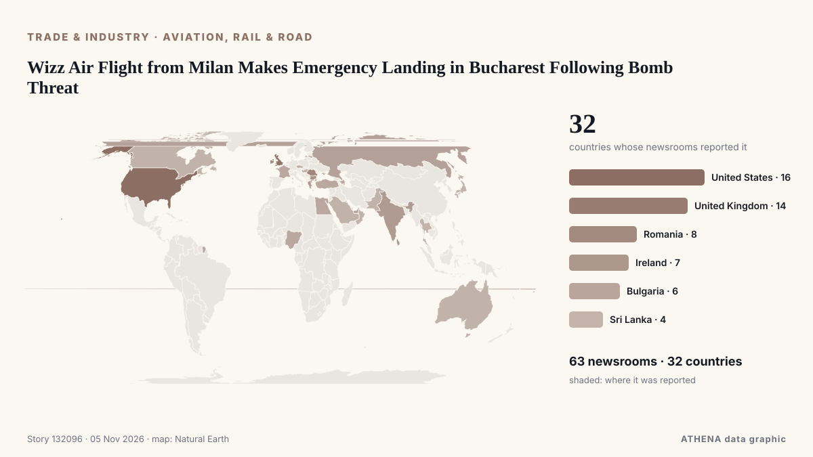

Wizz Air Flight from Milan Makes Emergency Landing in Bucharest Following Bomb Threat

Ryanair appears to be the worst-affected airline as at least 10 similar incidents were reported across Europe. from Evening Standard (London)
Reported independently by 63 outlets in 32 countries since 3 Nov, first by Romania Insider; coverage is fading. ATHENA rates the risk moderate (3.3/10), driven mainly by the severity of the harm described and its geographic and sector reach. Confidence is 90% (high), with 63 independent outlets corroborating it and an average source reliability of 72%. Newsrooms by country: United States (9), Romania (6), United Kingdom (5). Coverage: 3 Nov to 5 Nov, 35 hours.
Why it matters: Disruption to trade, industry or infrastructure travels along supply chains, changing costs and delivery times far away.
What changed: 59 new reports from 44 newsrooms in the 24 hours to 5 Nov.
First reported as: Romania’s airline Dan Air loses payment operator after insolvency request
At a glance
Selected, scored and written by ATHENA's published methodology. No editor intervenes in individual events. How this is produced ›
| 03 Nov 13:12 UTC | 1 |
|---|---|
| 03 Nov 15:12 UTC | 0 |
| 03 Nov 17:12 UTC | 1 |
| 03 Nov 19:12 UTC | 3 |
| 03 Nov 21:12 UTC | 1 |
| 03 Nov 23:12 UTC | 3 |
| 04 Nov 01:12 UTC | 5 |
| 04 Nov 03:12 UTC | 2 |
| 04 Nov 05:12 UTC | 3 |
| 04 Nov 07:12 UTC | 3 |
| 04 Nov 09:12 UTC | 5 |
| 04 Nov 11:12 UTC | 4 |
| 04 Nov 13:12 UTC | 4 |
| 04 Nov 15:12 UTC | 2 |
| 04 Nov 17:12 UTC | 0 |
| 04 Nov 19:12 UTC | 1 |
| 04 Nov 21:12 UTC | 2 |
| 04 Nov 23:12 UTC | 1 |
| 05 Nov 01:12 UTC | 2 |
| 05 Nov 03:12 UTC | 0 |
| 05 Nov 05:12 UTC | 0 |
| 05 Nov 07:12 UTC | 2 |
| 05 Nov 09:12 UTC | 5 |
| 05 Nov 11:12 UTC | 23 |
| 05 Nov 13:12 UTC | 15 |
| 05 Nov 15:12 UTC | 8 |
Why these numbers
Importance
Risk
Confidence
The reporting — who reported it, and when
headline as published · opens the original- Romania Insider · RomaniaUS Under Secretary of Defense for Policy to meet president Dan in Bucharest on November 4
- Business Review (Romania) · RomaniaBellemonde opens the first Ready to Move In showroom in northern Bucharest
- Simple Flying · United StatesAir Canada Cancels All Flights To This Long-Haul Destination: See Map Now
- Evening Standard (London) · United KingdomTwo Ryanair flights from Dublin searched after potential bomb threats
- Belfast Telegraph · United KingdomTwo Ryanair flights from Dublin searched after potential bomb threats
- PBS NewsHour · United StatesFlights across Europe face disruption after false bomb threats
- FBC News · FijiBomb threats on flights, cruise ship cause disruption in Europe, no devices found
- Al Jazeera English · QatarBomb threats disrupt flights across Europe, no explosive devices found
- Punch · NigeriaSenate debates national carrier, demands equal China flight rights
- The Island · Sri LankaSeven flights across Europe targeted by suspected bomb threats
- Business Recorder · PakistanBomb threats disrupt Europe flights
- Al Jazeera English · QatarSeven flights across Europe targeted by suspected bomb threats
- Nikkei Asia · JapanTaiwan airlines continue flights over Russia, rattling Europeans
- Trinidad Express · Trinidad and TobagoBid to ease airport anxiety
- The National Herald · United StatesFlights across Europe Searched and Diverted after Hoax Bomb Threats
- ABC News Australia · AustraliaChina Southern Airlines suspends direct Darwin to China route after one year
- Daily Mirror · Sri LankaSeven flights across Europe targeted by suspected bomb threats
- Gulf News · United Arab EmiratesEmirates Dubai-US flights: New mandatory attestation form from November 4
- WalesOnline · United KingdomGovernment update on Ryanair bomb threat that grounded seven flights
- Daily Mirror · Sri LankaThree Indian passengers arrested over unruly behaviour on Sydney-Katunayake flight
- Romania Insider · RomaniaRomania’s airline Dan Air loses payment operator after insolvency request
- Birmingham Mail · United KingdomBirmingham Airport to Delhi flight axed in 'real loss' for Indian community
- Arab Times · KuwaitFlights across Europe searched and diverted after hoax bomb threats
- Baltic News Network · LatviaBomb threats disrupt flights across Europe
- Business Traveller · United KingdomSWISS Bengaluru Flights Take Off With Nonstop Zurich Link
- Business Review (Romania) · RomaniaRomania’s purchasing power is barely half the European average, while Bucharest exceeds it
- Arabian Business · United Arab EmiratesEmirates imposes new US flight forms effective immediately
- BTA (English) · BulgariaBTA Bucharest Correspondent Martina Gancheva Receives Romanian Association of Journalists and Tourism Writers Award of Excellence
- Romania Insider · RomaniaRomania slips one place in European purchasing power ranking, Bucharest scores twice the national average
- Egypt Independent · EgyptBomb threats on board 7 flights across Europe cause disruptions
- The War Zone · United StatesUSAF Widens Lower-Cost Cruise Missile Effort To Also Include Glide Bombs
- NDTV · IndiaForeign Airlines Back Moving Some Mumbai Flights To Navi Mumbai Airport
- Business Review (Romania) · RomaniaPrimark confirms November opening dates for new stores in Bacău and Bucharest
- FreightWaves · United StatesEast Midlands Airport welcomes another Chinese cargo airline
- Breaking Defense · United StatesUK airshow RIAT permanently relocates from Fairford
- Indian Express · IndiaMumbai airport wants all flights to 14 overseas destinations to move to Navi Mumbai, writes to government
- FreightWaves · United StatesEmirates rolls out enhanced air cargo service for data center operators
- Simple Flying · United StatesHow Much Premium Economy Costs On London-New York Flights In 2026
- Greek City Times · GreeceGreece Sees Stronger Travel Demand and More Flights
- Simple Flying · United StatesWhy 17 Regional Gates Matter So Much To The Airline Carrying Over 60% Of Miami's Passengers